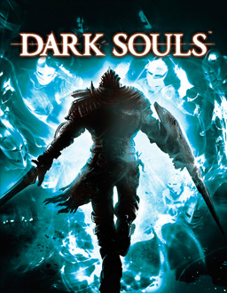
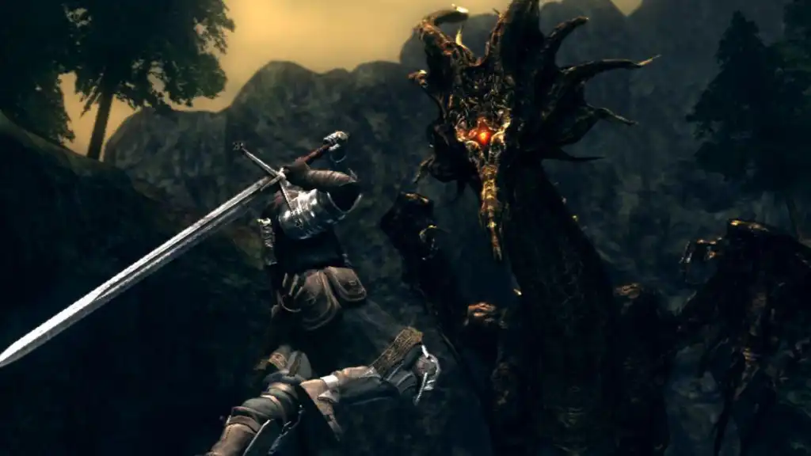

Dark Souls je akční RPG z roku 2011 vyvinutá společností FromSoftware a publikovaná společností Namco Bandai. Duchovní nástupce Demon's Souls od FromSoftware, hra je první v Dark Souls sérii. Hra se odehrává v království Lordran,

kde hráči přebírají roli prokletého nemrtvého postavy, která začíná pouť za poznáním osudu svého druhu. Port pro Windows představující další obsah, známý jako Prepare to Die Edition, byl vydán v srpnu 2012. Byl také vydán pro konzole pod podtitulem Artorias of the Abyss v říjnu 2012.Dark Souls byla citována jako jedna z nejlepších videoher, jaké byly kdy vyrobeny. Kritici chválili jeho hloubku boje, složitý design úrovní a použití chuťového textu. Obtížnost hry však měla smíšené recenze, přičemž někteří jej kritizují za to, že je příliš nemilosrdný. Původní verze hry pro Windows byla méně dobře přijata, s kritikou zaměřenou na několik technických problémů. Do dubna 2013 hra měla po celém světě prodáno přes dva miliony kopií. Jeho úspěch vedl k vývoji dvou pokračování — Dark Souls II (2014) a Dark Souls III (2016) — zatímco remasterovaná verze byla vydána v roce 2018.
Dark Souls je akční hra na hrdiny z pohledu třetí osoby. Základní mechanikou hry je průzkum.
Hráči se vyzývají, aby postupovali opatrně, poučili se z minulých chyb nebo našli alternativní oblasti
k prozkoumání. Dark Souls se odehrává ve velkém a souvislém, propojeném prostředí, propojeném skrz
oblast centrálního uzlu. Postava hráče může libovolně cestovat mezi oblastmi a prozkoumávat různé cesty,
ačkoli pro odemknutí určitých oblastí musí být splněny předpoklady.

Ústředním prvkem hry Dark Souls je oheň. Ohně jsou roztroušeny po celém světě a slouží jako kontrolní body pro každou úroveň. Odpočinkem u ohně se hráčská postava uzdraví, naplní a znovu získá všechny léčivé náboje jejich „Estus Flask“. Mohou se také zvýšit úroveň a provádět další funkce, jako je ladění magie a opravy a modernizace vybavení. Nicméně odpočinek u ohně oživí všechny nepřátele světa, kromě bossů, mini-bossů a přátelských nehratelných postav.

Interakce hráčské postavy se světem Dark Souls zahrnuje velké množství bojů. Boj zahrnuje útoky na blízko, různé formy obranného manévrování a magické schopnosti. Pro boj zblízka mají hráčské postavy přístup k široké škále vysoce fantasy středověkého stylu zbraní – včetně mečů, kopí, palcátů a fantastických zbraní, jako jsou magické meče, obrovské velké meče a obrovské kyje. Pro obranu mají hráčské postavy přístup ke štítům, brnění, uhýbání válením, couvání a odrážení. Pro magii, která zahrnuje širokou škálu útočných a obranných schopností známých jako sorcery, zázraky a pyromancie, hráčské postavy nepoužívají žádnou formu many jako ve většině ostatních fantasy RPG. Místo toho získají diskrétní počet použití pro každé naladěné kouzlo při odpočinku u ohně. Všechny tyto různé formy boje mají kompromisy, varianty a náklady ve hře s nimi spojené. Všechny mohou být vylepšeny nebo pozměněny nějakým způsobem pomocí zvyšování úrovně, kování, spotřebních předmětů, magických prstenů a nového vybavení.